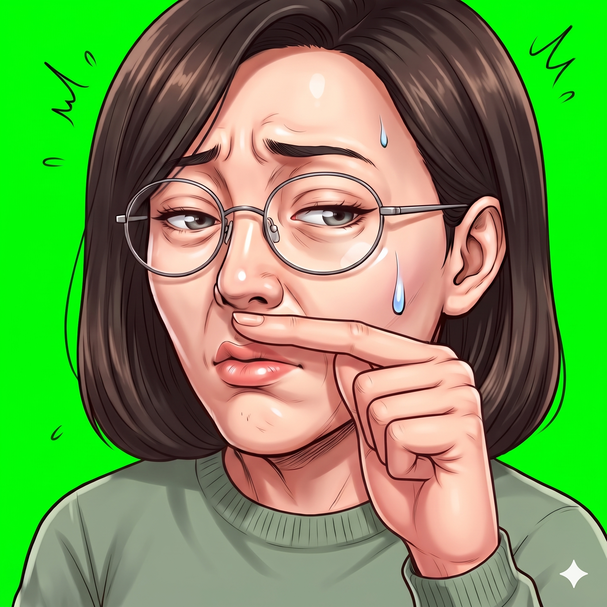
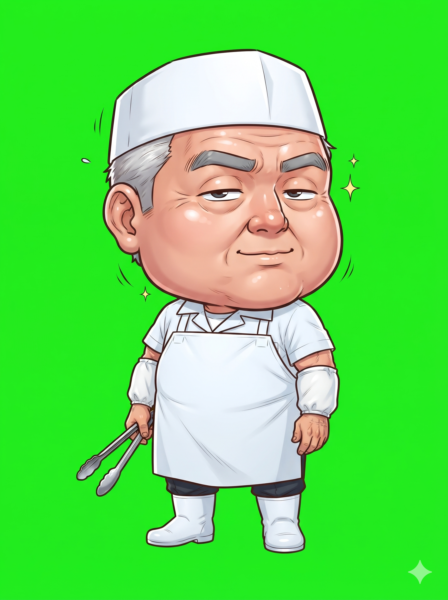
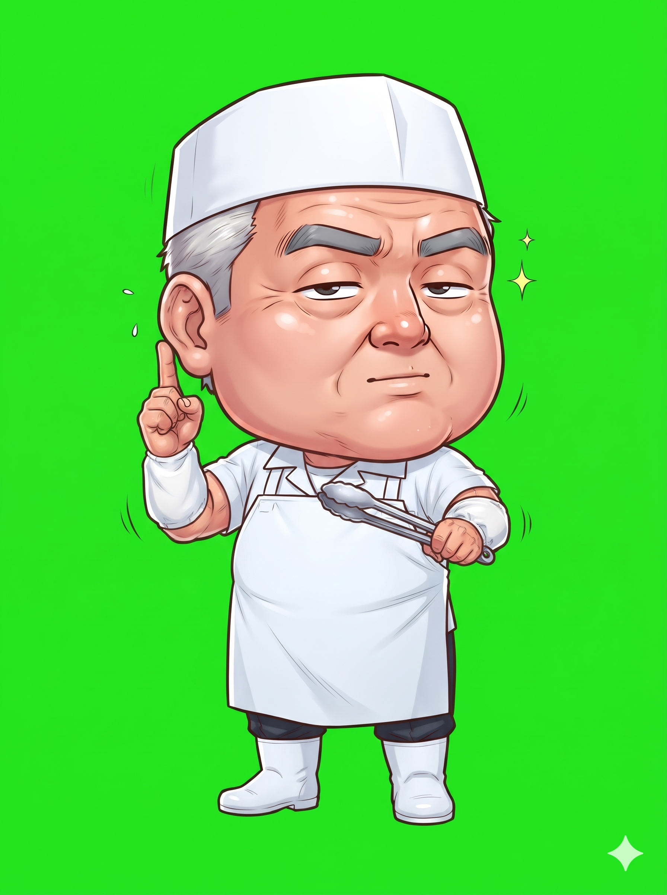
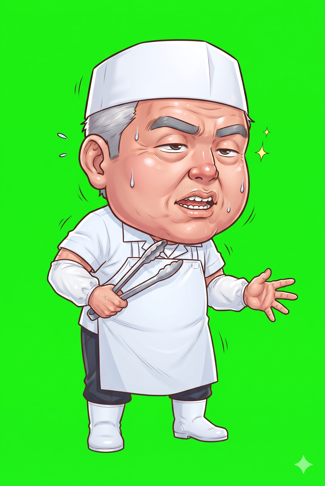
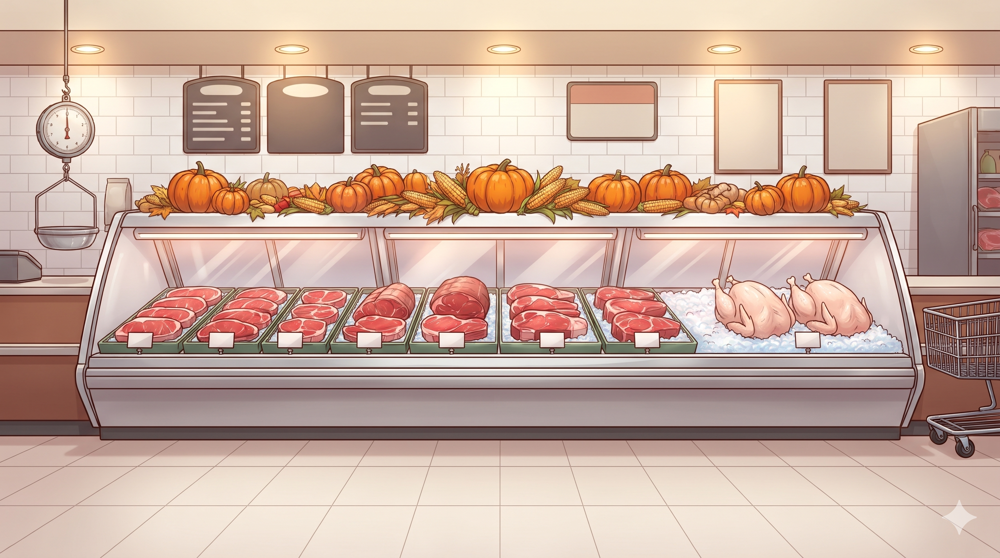
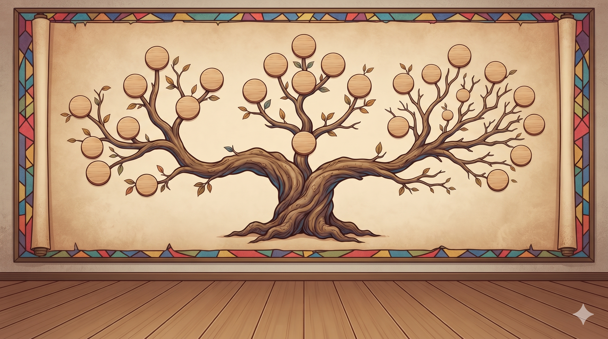
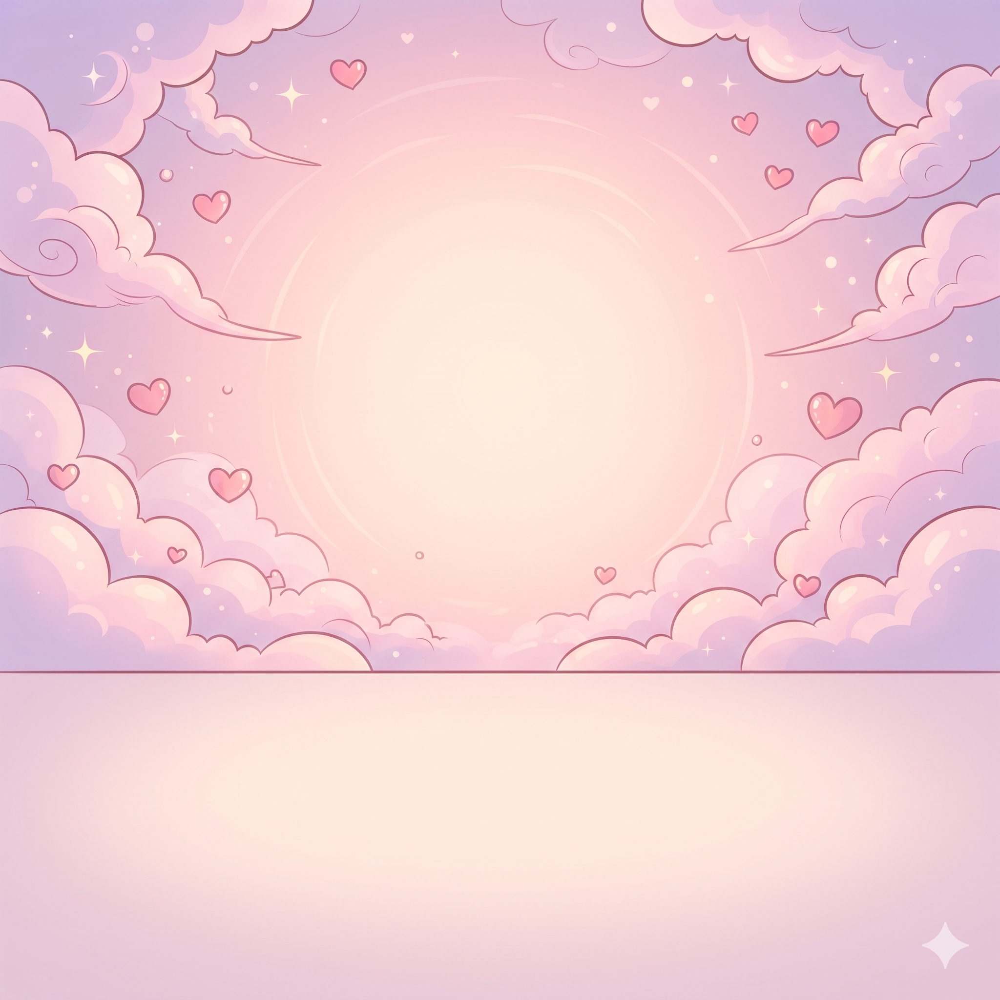
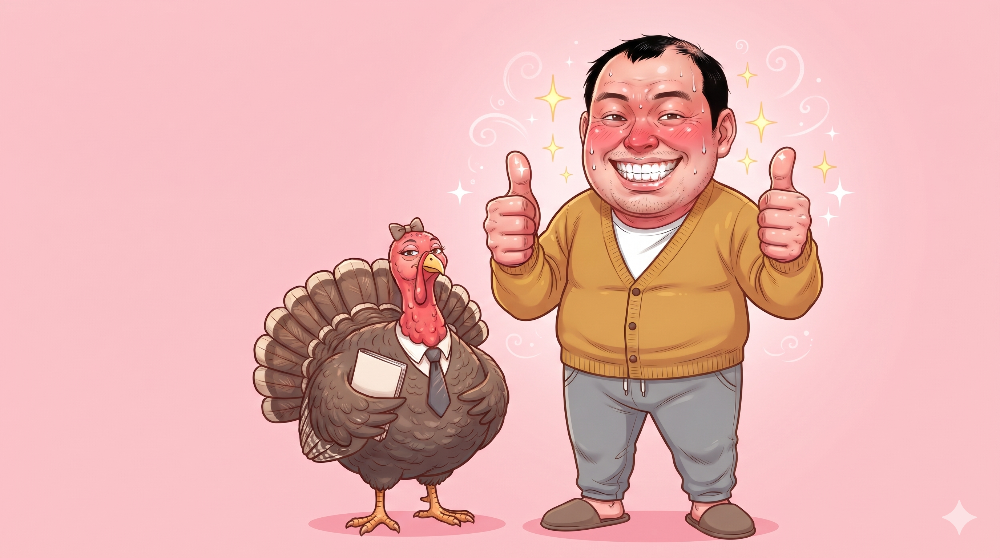
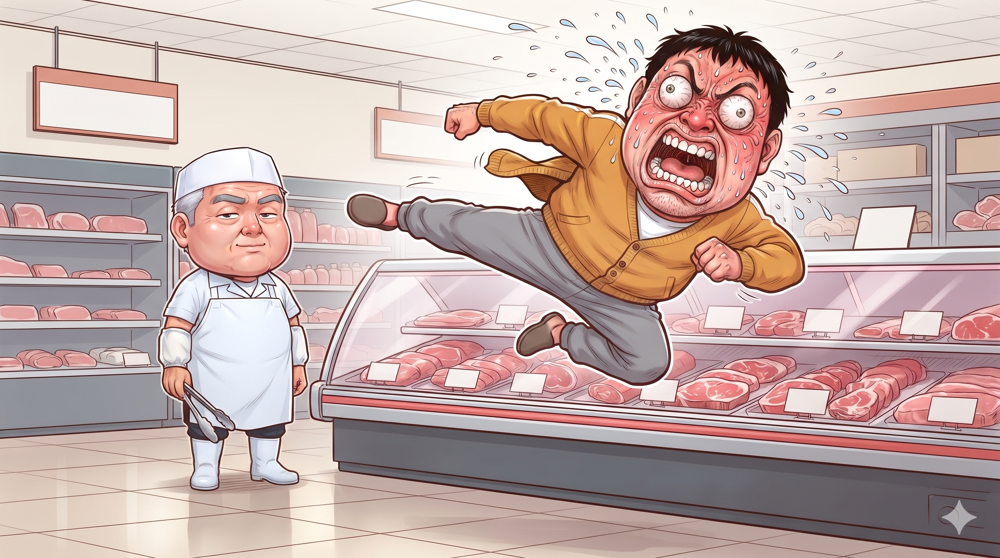
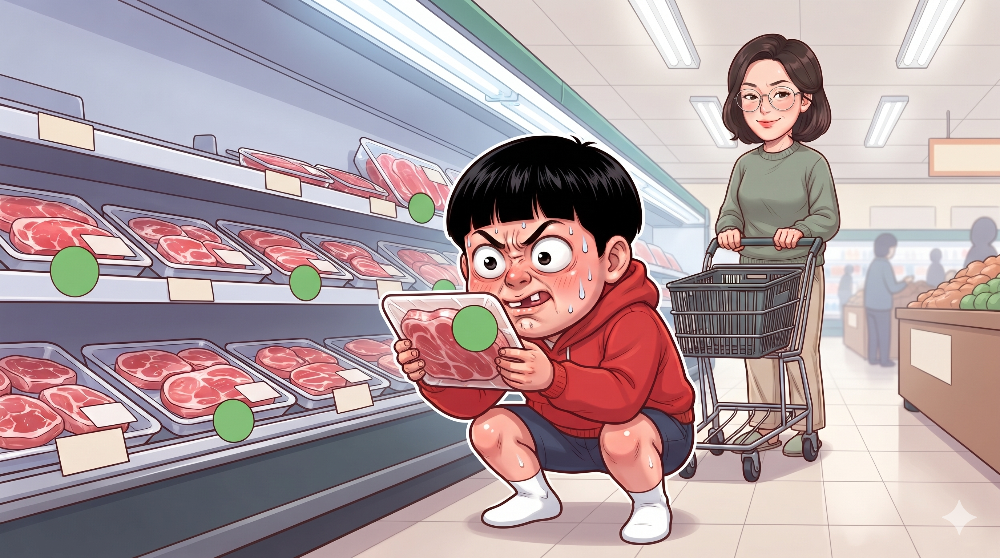

11화 — 칠면조 먹으면 교회 다니는 거예요? 천주교 · 개신교 · 장로교 · 감리교 · 이단 · 이슬람 · 유대교 — 그림 확인 (50장)
결과(왼쪽)를 첨부한 기준 그림과 비교한다: 얼굴 · 머리 · 옷 · 피부 톤 · 선 굵기 · 과장 정도. 판정은 content/ep11-thanksgiving-religion/prompts/jobs/review.json 에 "id": "ok" 또는 "redo: 이유" 로 적는다.
아빠 — 기본 common/dad/normal확인 전
결과①화풍 앵커
아빠 — 당황 common/dad/panic확인 전
결과①화풍 앵커②같은 사람 유지용 기준 그림
아빠 — 설명 common/dad/explain확인 전
결과①화풍 앵커②같은 사람 유지용 기준 그림
아빠 — 뿌듯 common/dad/proud확인 전
결과①화풍 앵커②같은 사람 유지용 기준 그림
아빠 — 충격 common/dad/shock확인 전
결과①화풍 앵커②같은 사람 유지용 기준 그림
아이 — 기본 common/kid/normal확인 전
결과①화풍 앵커
아이 — 질문 common/kid/ask확인 전
결과①화풍 앵커②같은 사람 유지용 기준 그림
아이 — 우와 common/kid/wow확인 전
결과①화풍 앵커②같은 사람 유지용 기준 그림
아이 — 의심 common/kid/doubt확인 전
결과①화풍 앵커②같은 사람 유지용 기준 그림
엄마 — 기본 common/mom/normal확인 전
결과①화풍 앵커②채널 프로필 — 오른쪽 위 안경 쓴 여자가 엄마③채널 배너 — 맨 오른쪽 팔짱 낀 여자가 엄마
엄마 — 다 안다는 미소 common/mom/smirk확인 전
결과①화풍 앵커②같은 사람 유지용 기준 그림
엄마 — 설명 common/mom/explain확인 전
결과①화풍 앵커②같은 사람 유지용 기준 그림
엄마 — 충격 common/mom/shock확인 전
결과①화풍 앵커②같은 사람 유지용 기준 그림
엄마 — 한숨 (이마 짚기) common/mom/sigh확인 전
결과①화풍 앵커②같은 사람 유지용 기준 그림
컷인 — 아빠 충격 common/cutin/dad-shock확인 전
결과①화풍 앵커②같은 사람 유지용 기준 그림
컷인 — 아빠 뿌듯 common/cutin/dad-proud확인 전
결과①화풍 앵커②같은 사람 유지용 기준 그림③그 사람 대표 컷인 (얼굴 · 피부 톤)
컷인 — 아이 질문 common/cutin/kid-ask확인 전
결과①화풍 앵커②같은 사람 유지용 기준 그림
컷인 — 엄마 다 안다는 미소 common/cutin/mom-smirk확인 전
결과①화풍 앵커②같은 사람 유지용 기준 그림
시그니처 — 아빠 네모 입막음 ① 손 올리기 common/cutin/dad-sig-1확인 전
결과①화풍 앵커②같은 사람 유지용 기준 그림③그 사람 대표 컷인 (얼굴 · 피부 톤)
시그니처 — 아빠 네모 입막음 ② 입에 딱 common/cutin/dad-sig-2확인 전
결과①화풍 앵커②첫 번째 프레임 — 이 그림을 그대로 다시 그린다③그 사람 기준 그림 (normal)
시그니처 — 아빠 네모 입막음 ③ 부들부들 common/cutin/dad-sig-3확인 전
결과①화풍 앵커②첫 번째 프레임 — 이 그림을 그대로 다시 그린다③그 사람 기준 그림 (normal)④바로 앞 컷
시그니처 — 엄마 검지 네모 ① 왼쪽 세로줄 common/cutin/mom-sig-1확인 전
결과①화풍 앵커②같은 사람 유지용 기준 그림③엄마 얼굴 컷인 — 피부 · 얼굴 톤 기준
시그니처 — 엄마 검지 네모 ② 오른쪽 세로줄 common/cutin/mom-sig-2확인 전
결과①화풍 앵커②첫 번째 프레임 — 이 그림을 그대로 다시 그린다③그 사람 기준 그림 (normal)
시그니처 — 엄마 검지 네모 ③ 위 가로줄 common/cutin/mom-sig-3확인 전

결과①화풍 앵커②첫 번째 프레임 — 이 그림을 그대로 다시 그린다③그 사람 기준 그림 (normal)④바로 앞 컷
시그니처 — 엄마 검지 네모 ④ 아래 가로줄 common/cutin/mom-sig-4확인 전
결과①화풍 앵커②첫 번째 프레임 — 이 그림을 그대로 다시 그린다③그 사람 기준 그림 (normal)④바로 앞 컷
시그니처 — 엄마 양 볼 누르고 악! common/cutin/mom-sig-scream확인 전
결과①화풍 앵커②앞 컷 · 기준 그림③그 사람 기준 그림 (normal)④그 사람 대표 컷인 (얼굴 · 피부 톤)
정육 코너 사장님 — 기본 butcher/normal확인 전

결과①화풍 앵커
사장님 — 집게 들고 손가락으로 바로잡기 butcher/correct확인 전

결과①화풍 앵커②같은 사람 유지용 기준 그림
사장님 — 손바닥 펴고 차근차근 설명 butcher/explain확인 전

결과①화풍 앵커②같은 사람 유지용 기준 그림
사장님 — 따뜻한 웃음 (아이 눈높이) butcher/smile확인 전
결과①화풍 앵커②같은 사람 유지용 기준 그림
사장님 정색 (컷인) cutin/butcher-flat확인 전
결과①화풍 앵커②같은 사람 유지용 기준 그림
배경 — 동네 큰 마트 정육 코너 (주 무대) bg/meat-counter확인 전

결과①화풍 앵커
배경 — 족보 나무 판 (라운드 카드 뒤) bg/family-tree확인 전

결과①화풍 앵커
배경 — 아빠의 상상 분홍 배경 bg/imagine-pink확인 전

결과①화풍 앵커
아빠의 상상 — 넥타이 맨 '교회 전용 닭' 칠면조 full/turkey-tie-imagine확인 전

결과①화풍 앵커②같이 나오는 사람 기준 그림 (normal)
아빠의 상상 — 정육 코너 앞 이단 옆차기 full/jump-kick-imagine확인 전

결과①화풍 앵커②같이 나오는 사람 기준 그림 (normal)③같이 나오는 사람 기준 그림 (normal)
장면 — 아이가 초록 도장을 하나하나 찾는다 (아이 눈높이 끝) full/stamp-hunt확인 전

결과①화풍 앵커②같이 나오는 사람 기준 그림 (normal)③같이 나오는 사람 기준 그림 (normal)